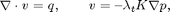
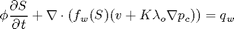
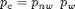
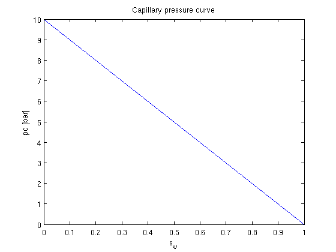
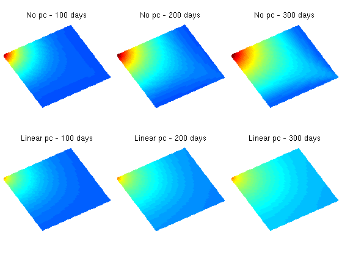
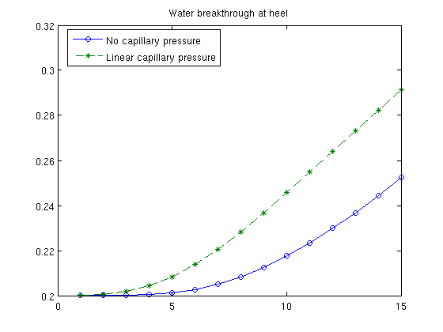

Pressure Solver with capillary pressure:
Here, we demonstrate the effect of capillary pressure on the solution of a two-phase oil-water problem. We solve the two-phase pressure equation

where v is the Darcy velocity (total velocity) and lambda_t is the total mobility, which depends on the water saturation S.
The saturation equation (conservation of the water phase) is given as:

This tutorial shows a 2D case with homogeneous permeability and
porosity and linear capillary pressure curve and is based on the example
Construct simple Cartesian test case
Define fluid and capillary pressure curvePlot the pc-curveSet wellsSet up solution structures and assemble linear systemSet up pressure and transport solversSolve initial pressure in reservoirTransport loopStart the main loopPlot water breakthrough at heelConstruct simple Cartesian test case
nx = 40; ny = 40; nz = 1;
G = cartGrid([nx ny nz]);
G = computeGeometry(G);
rock.perm = repmat(100*milli*darcy, [G.cells.num, 1]);
rock.poro = repmat(0.3 , [G.cells.num, 1]);
x = linspace(0, 1, 11) .';
y = linspace(1, 0, 11) .';
Define fluid and capillary pressure curve
We define the relative permeability and the capillary pressure in form of tables, and let the relative permeability curves be quadratic and the capillary function linear. The strength of the capillary pressure is decided by cap_scale. The capillary pressure is defined in the non-wetting phase, i.e. .
pc_form = 'nonwetting';
cap_scale = 10;
[kr, pc] = tabulatedSatFunc([x, x.^2, y.^2, y.*cap_scale*barsa]);
Define constant properties for viscosity and density
props = constantProperties([ 1, 10] .* centi*poise, ...
[1000, 700] .* kilogram/meter^3);
Here we put together a valid fluid object from the above defined functions. To read more about the fluid structure write help fluid_structure in MRST. First make a fluid without capillary pressure
fluid = struct('properties', props , ...
'saturation', @(x, varargin) x.s , ...
'relperm' , kr);
Then make another fluid object identical to the one above except for the capillary pressure term 'pc'.
fluid_pc = struct('properties', props , ...
'saturation', @(x, varargin) x.s , ...
'relperm' , kr , ...
'pc' , @(x, varargin) pc(x.s));
Plot the pc-curve
Make a dummy state/solution structure to plot the pc curve since 'fluid.pc' demands state as an input
xDummy = initState(G, [], [0, 1]);
xDummy.s = linspace(0, 1, numel(xDummy.s))'; ...
pc = convertTo(fluid_pc.pc(xDummy), barsa);
clf
plot(xDummy.s, pc);
xlabel('s_w'); ylabel('pc [bar]');
title('Capillary pressure curve')
 Set wells
rate = 0.5*meter^3/day;
bhp = 1*barsa;
W = verticalWell([], G, rock, 1, 1, 1:nz, ...
'Type', 'rate', 'Val', rate, ...
'Radius', .1, 'Name', 'I', 'Comp_i', [1 0]);
W = verticalWell(W, G, rock, nx, ny, 1:nz, ...
'Type','bhp', 'Val', bhp, ...
'Radius', .1, 'Dir', 'x', 'Name', 'P', 'Comp_i', [0 1]);
Set up solution structures and assemble linear system
rSol = initState(G, W, 0, [0.2, 0.8]);
rSol_pc = initState(G, W, 0, [0.2, 0.8]);
gravity off
verbose = false;
S = computeMimeticIP(G, rock, 'Verbose', verbose,'InnerProduct','ip_tpf');
Set up pressure and transport solvers
This example uses an implicit transport solver, an explicit solver can be used if the time step restriction for the parabolic term is less than for the hyperbolic term. This is the case if 'cap_scale' is small. We let 'fluid' be a parameter in 'psolve' and 'tsolve' so that we can use the solvers for simulation both with and without capillary pressure by supplying different fluid objects. For this case we use the verbose = false for the transport solver. If more information about the convergence of the method is required; use verbose = true.
psolve = @(state, fluid) solveIncompFlow(state, G, S, fluid, 'wells', W);
tsolve = @(state, dT, fluid) implicitTransport(state, G, dT, rock, ...
fluid, 'wells', W, ...
'verbose', verbose);
Alternatively we could have defined an explicit transport solver by
Solve initial pressure in reservoir
Observe that we supply different fluid objects for the two solutions, one with capillary pressure and one without.
rSol = psolve(rSol, fluid);
rSol_pc = psolve(rSol_pc, fluid_pc);
Transport loop
We solve the two-phase system using a sequential splitting in which the pressure and fluxes are computed by solving the flow equation and then held fixed as the saturation is advanced according to the transport equation.
T = 300*day();
dT = T/15;
dTplot = 100*day();
N = fix(T/dTplot);
pv = poreVolume(G,rock);
Start the main loop
t = 0; plotNo = 1;
h1 = 'No pc - '; h2 = 'Linear pc - ';
e = []; p_org = []; p_pc = [];
figure;
while t < T,
rSol = tsolve(rSol, dT, fluid);
rSol_pc = tsolve(rSol_pc, dT, fluid_pc);
s = [rSol.s(:,1); rSol_pc.s(:,1)];
assert(max(s) < 1+eps && min(s) > -eps);
rSol = psolve(rSol, fluid);
rSol_pc = psolve(rSol_pc, fluid_pc);
e = [e; sum(abs(rSol.s(:,1) - rSol_pc.s(:,1)).*pv)/sum(pv)];
p_org = [p_org; rSol.s(W(2).cells,1)' ];
p_pc = [p_pc; rSol_pc.s(W(2).cells,1)'];
t = t + dT;
if ( t < plotNo*dTplot && t <T), continue, end
heading = [num2str(convertTo(t,day)), ' days'];
r = 0.01;
subplot('position',[(plotNo-1)/N+r, 0.50, 1/N-2*r, 0.48]), cla
plotCellData(G, rSol.s(:,1));
caxis([0 1]), view(60,50), axis equal off, title([h1 heading])
subplot('position',[(plotNo-1)/N+r, 0.02, 1/N-2*r, 0.48]), cla
plotCellData(G, rSol_pc.s(:,1));
caxis([0 1]), view(60,50), axis equal off, title([h2 heading])
plotNo = plotNo+1;
end
 Plot water breakthrough at heel
As we clearly see from the plots in the figure, the simulation with capillary pressure has much more diffusion than the simulation without capillary pressure. This is confirmed by the water breakthrough curve.
clf
n = numel(p_org(:,1));
plot(1:n,p_org(:,1),'-o',1:n,p_pc(:,1),'--*')
legend('No capillary pressure','Linear capillary pressure','Location','Best');
title('Water breakthrough at heel');
